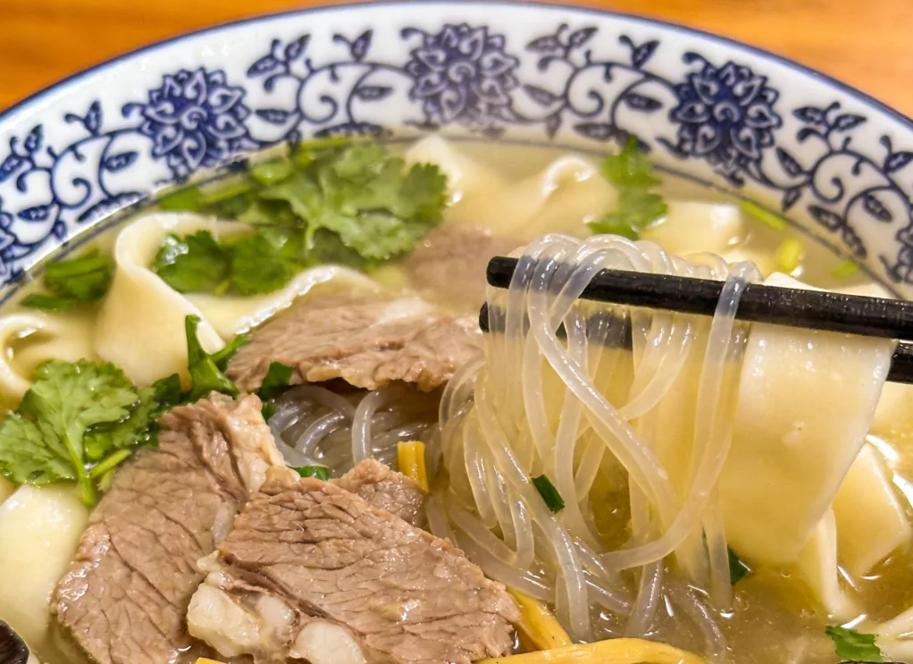
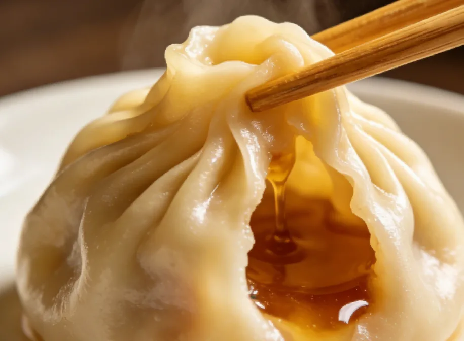
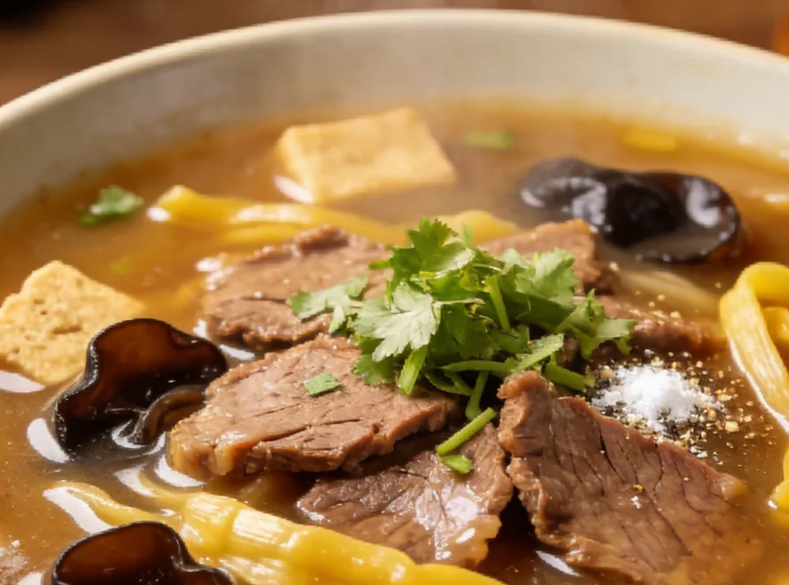
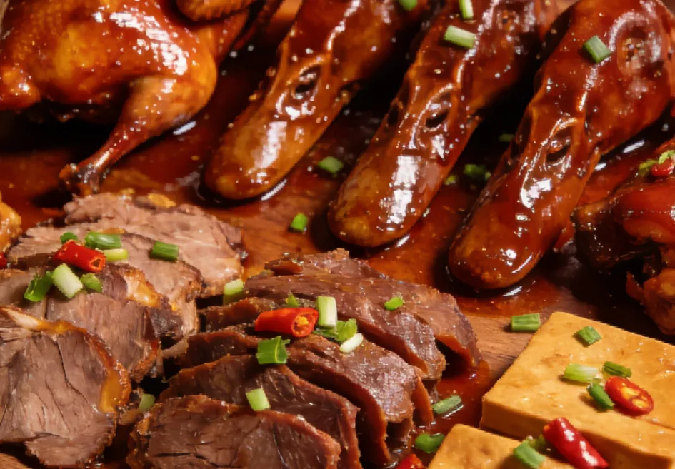
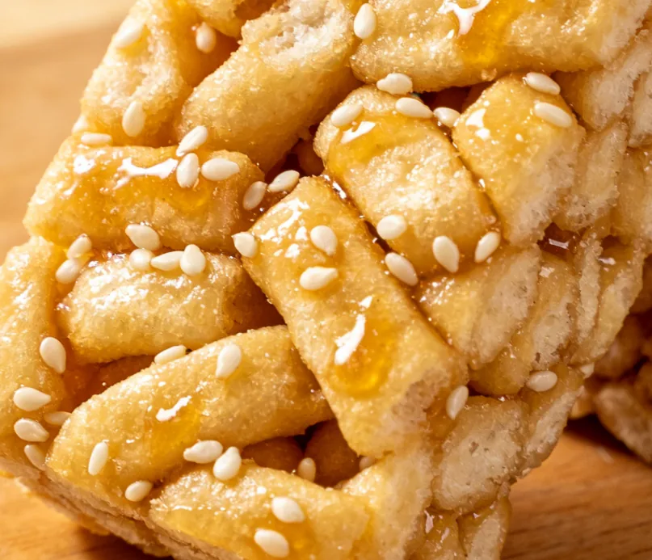
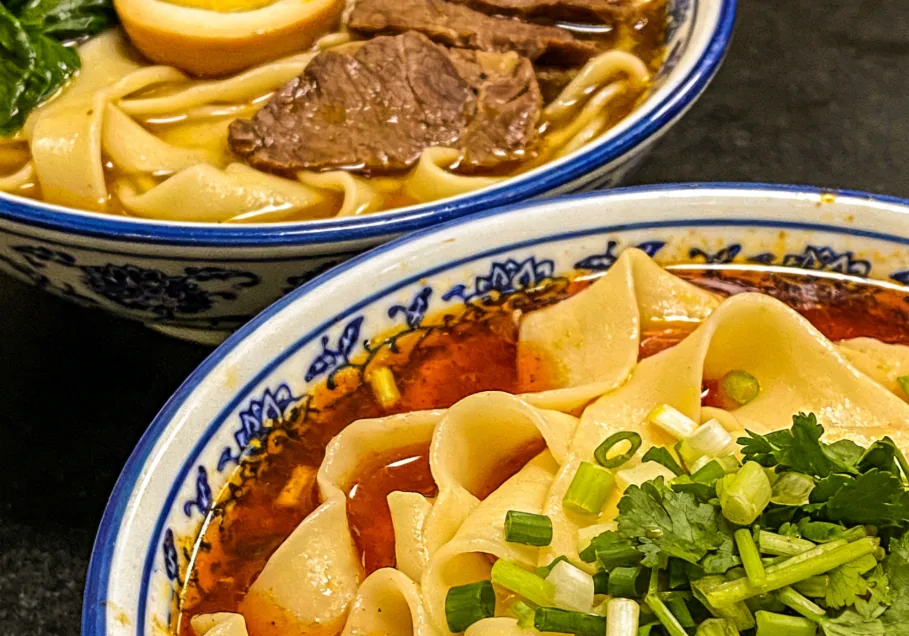
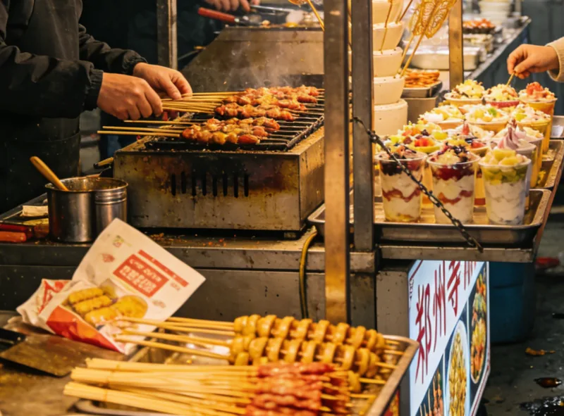
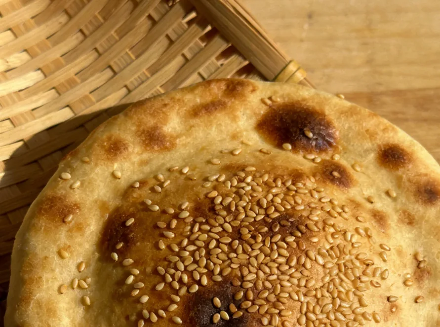
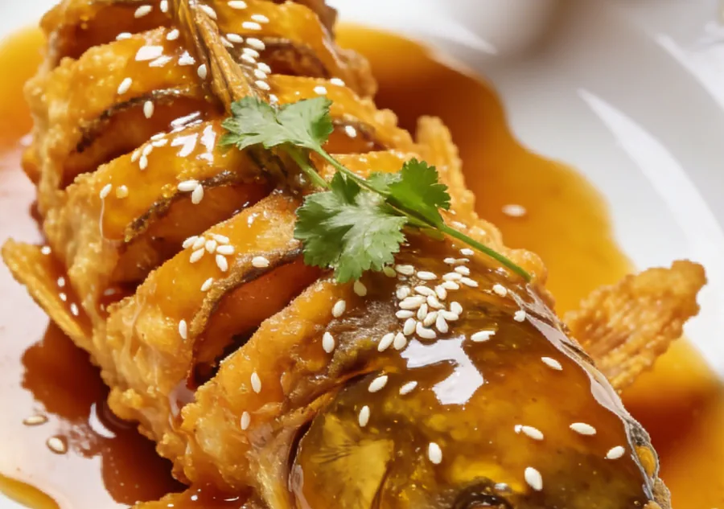

Hidden Cuisine
The authentic flavors of Henan — where centuries-old recipes and bold tastes come together in every dish.
The authentic flavors of Henan — where centuries-old recipes and bold tastes come together in every dish.
Henan cuisine, one of China's Eight Great Culinary Traditions, is celebrated for its bold flavors, hearty textures, and centuries-old recipes.

Zhengzhou's iconic braised noodles feature hand-pulled wheat noodles simmered in a rich, slow-cooked lamb broth with tender meat and mushrooms.

Exquisite soup dumplings crafted with a paper-thin wrapper encasing savory pork and a burst of hot, flavorful broth.

A peppery soup made with black pepper, beef, and a variety of spices. This beloved breakfast staple awakens the senses every morning.

Zhengzhou's beloved braised dishes use a secret blend of soy sauce, star anise, and cinnamon to create deeply flavored meats and tofu.

A traditional baked pastry with a flaky golden crust and sweet sesame or red bean filling, crafted using centuries-old techniques.

Hand-cut or rhythmically pulled noodles delivering unmatched texture, perfectly absorbing the rich flavors of every broth.

As dusk falls, Erqi district transforms into a vibrant food paradise with sizzling skewers and aromatic snacks filling the air.

Sesame flatbread baked in a clay oven until golden. Often paired with braised meat, it is the quintessential comfort food.

Fresh carp from the Yellow River, braised in a sweet and sour glaze with ginger and scallion, representing the finest of Henan river cuisine.
"Food is the paramount necessity of the people, and in Zhengzhou, every meal tells the story of a civilization."— Henan Culinary Heritage